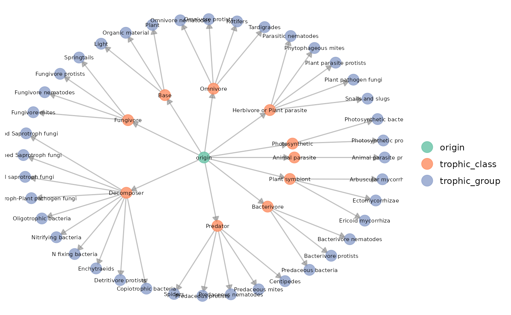
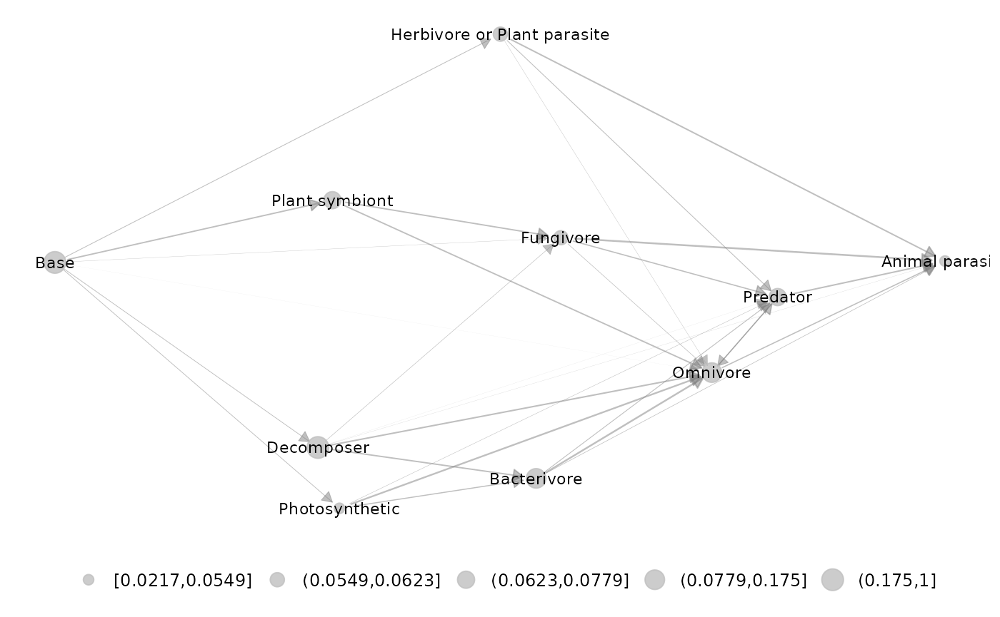
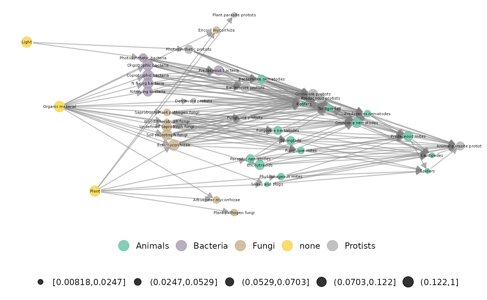
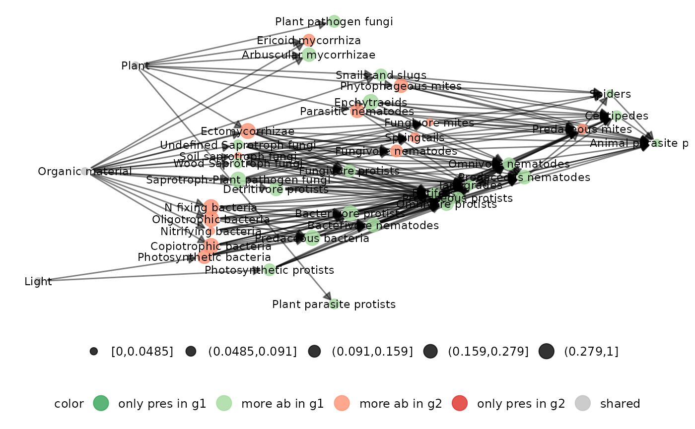

Norway soil metanetwork dataset was extracted from Calderon-SAnou et al. 2021. It consists in a soil expert knowledge metaweb with abundance data built from eDNA data in disturbed and non-disturbed sites by moth outbreaks. It also contains a trophic table to analyse the network at different aggregation levels.
Norway soil dataset is lazy loaded in metanetwork. meta_norway consists in a object of class metanetwork.
## metaweb has 40 nodes and 204 edges
## 2 local networks
## available resolutions (not computed) are: trophic_group trophic_class taxaplot_trophic_table function
Trophic table describes nodes memberships in higher relevant groups. In angola dataset, two different taxonomic resolutions are available. Networks can be handled and represented at trophic class or trophic group level.
The plot_trophic_table function allows representing the tree describing species memberships.
ggnet.custom = ggnet.default
ggnet.custom$label.size = 2
plot_trophicTable(meta_norway,res = c('trophic_group','trophic_class'),ggnet.config = ggnet.custom)
append_agg_nets method
The method append_agg_nets allows computing and appending aggregated networks (at the different available resolutions) to the current metanetwork.
meta_norway = append_agg_nets(meta_norway)
print(meta_norway)## metaweb has 40 nodes and 204 edges
## 2 local networks
## available resolutions are: trophic_group trophic_class taxaOnce computed, ggmetanet function allows representing aggregated networks and legending local networks using trophic table using ‘ggnet’ visualisation. Do not forget to first compute trophic levels. Computation of ‘TL-tsne’ layout is done ggmetanet function.
meta_norway = compute_TL(meta_norway)
ggmetanet(g = meta_norway$metaweb_trophic_class,beta = 0.5,metanetwork = meta_norway)
Node sizes are proportional to relative abundances. Trophic table allows adding a legend to network at the finest resolution.
ggnet.custom = ggnet.default
ggnet.custom$label.size = 1.5
ggmetanet(g = meta_norway$metaweb,beta = 0.006,legend = 'taxa',metanetwork = meta_norway, ggnet.config = ggnet.custom)
diff_plot
diff_plot(g1 = meta_norway$high,g2 = meta_norway$low,beta = 0.006,metanetwork = meta_norway)